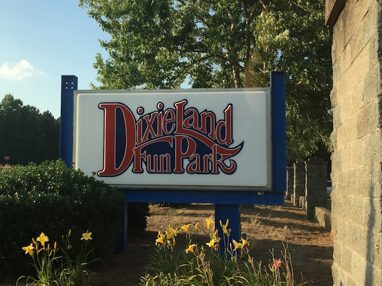
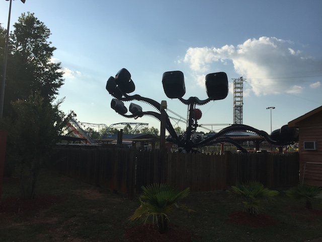

| |
Fun Junction U.S.A Review

Fun Junction U.S.A is not the kind of park that most people have high expectations for. People look at something like Fun Junction U.S.A, and just think credit whoring stop. And...that's exactly what this palce is. A small little credit whoring stop. I feel kind of bad for writing a review of this park as I spent so little time here. I literally was here for about 10 minutes. Just in and out to get the credit. You could play a song from Dream Theater, such as "Lines in the Sand", and we would've gotten in, gotten the credit, and left, all before the song ended. But from my little bit of time here, I could sort of tell, looking around, seeing everything there, that this park is just a tiny little place meant for locals. It just felt...empty. You ever see those abandoned amusement park settings in something like a Scooby Doo episode? Well, this park kind of fit that criteria. It literally felt like we were in a Scooby Doo set. We were literally the only people in the park. There were only a handful of employees there. The one at the gate was sleeping and we had to wake her up, and honestly, according to her, we were the first people that she had seen all day. And we got there in the evening. And it did feel...like it had seen better days. I mean, the park changed its name to Fun Junction U.S.A, but the sign out front reads Dixieland Funpark. The park really should get that changed to reflect the new name. But for all those problems, they do have a really good credit whoring coaster. Much better than most coasters at park like this. So yeah. Take a look at what a credit whore who was in and out of here has to say about the park since I review everything.
Rollercoasters
There is a link to a review of all the Rollercoasters at Fun Junction U.S.A.
Top Coasters
Scream'n Eagle Review

Flat Rides
All right. Here are all of the flat rides that are found at Fun Junction U.S.A. Now I didn't ride any of these. But they do seem to have a couple fun flat rides. First off, they have a Screamin Swing. One of those single park ones with low capacity. But when you consider the type of park Fun Junction U.S.A is, this is a perfect fit for them. They also seem to have a spider, as well as some kiddy flats. Not much, but hey. For a small little park, it's all good.

What? You got a photo of the spider, but not the Screamin Swing? WTF!?
Water Rides
There is only one water ride at Fun Junction U.S.A. The Bumper Boats. Yep, these things tend to be a staple at small little credit whoring parks like this. They can be fun if you go in a big group and just go all out. But credit whores probably don't want to get wet.
Dining
I did not eat at Fun Junction U.S.A.
Theming and Other Attractions
Here are the reviews of all the other stuff at Fun Junction U.S.A. Actually, from looking around the park, there are some other things worth talking about. Not theming. There's literally none. Not even crappy Golf'N'Stuff theming. Not even carnival theming. All the rides are just plopped down. So ignore the theming part. Let's talk about other stuff. Because there's one particular thing worth mentioning. The Zipline. This place has a freaking Zipline. One those ziplines that seems similar to the one at the Glenwood Caverns Adventure Park. Sure, it doesn't go down a mountain here. But that's totally a cool thing to do. I kind of regret not checking it out. Those things are really cool. Aside from that...they have a slide. Those are fun. Oh, and Go Karts. These types of places always have Go Karts. Those fun, as always. Typical small park stuff.
In Conclusion
Fun Junction U.S.A looks to be a fun little park. Granted, when I was there, the entire park was freaking dead, we were the only people there, and it just seemed like a crappy little place to go in, get the credit, and then get out. But when you look at the ride collection that this park has, it's actually pretty good for a small park like this. I mean, Screamin Swings are always a good thing. Places like this almost never have a zipline. So that's great too. And the credit they have is actually really good. OK, it's not nearly as good as the Scandia Screamer. And Fun Junction U.S.A isn't nearly as good as Scandia (Why does Scandia seem to be the perfect credit whoring stop?). Sure, the place seemed to be completely empty and abandoned when I was there and seemed kind of eerie. But knowing the parks ride selection, I'm sure it's a lot of fun with the right group of people.
Enthusiast FAQs.
*Are there kiddy coaster restrictions? - Fun Junction U.S.A doesn't have a kiddy coaster.

Tips
*I'd recommend trying other stuff and not just credit whoring, but then I'd be a hypocrite. I'm sure it's fun.
*GoPros are good. Everything else is bad.
*Have Fun!!!!
Theme Park Category:
Small Park
Location
Fayetteville, Georgia, USA
Last Day Visited
June 23, 2016
Video
While it's not impossible for there to be a tiny little Fun Junction U.S.A video, it'll almost certainly never happen.
Complete Update List
2016
Deep South Trip 2016
Here's a link to the parks website.
Home
|